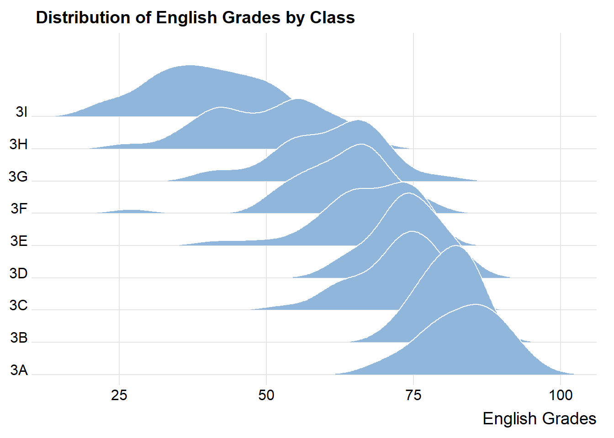
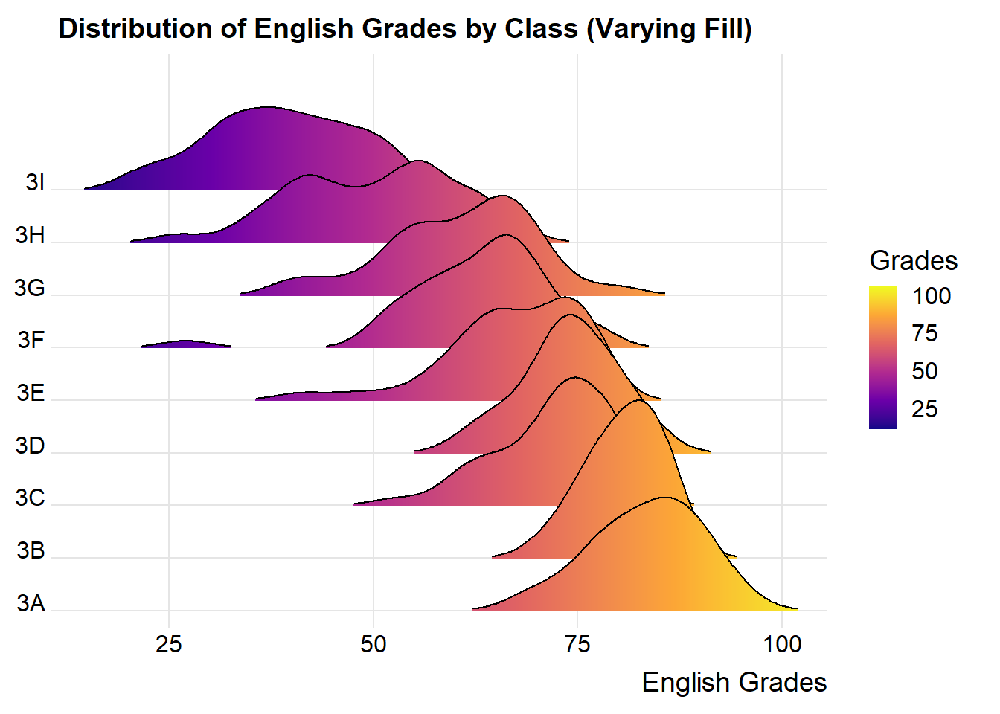
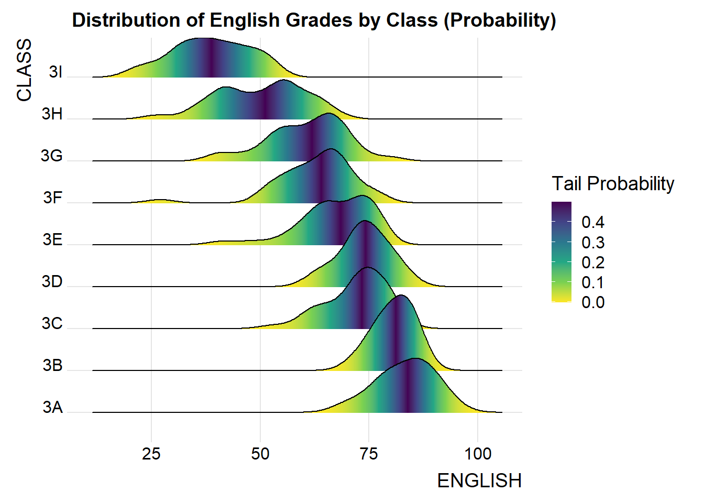
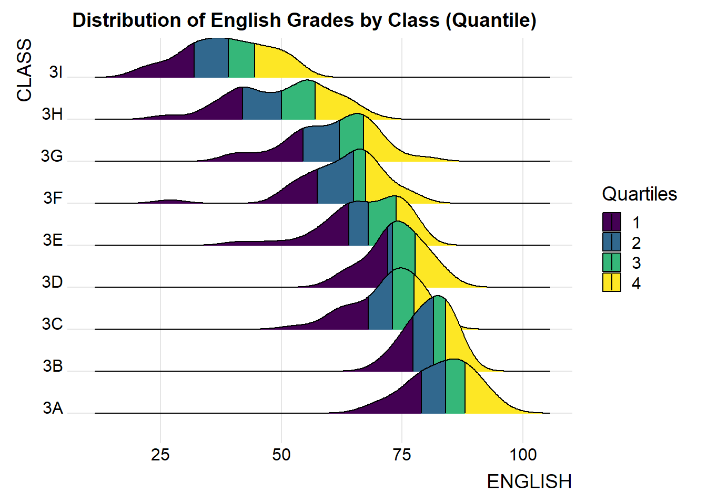
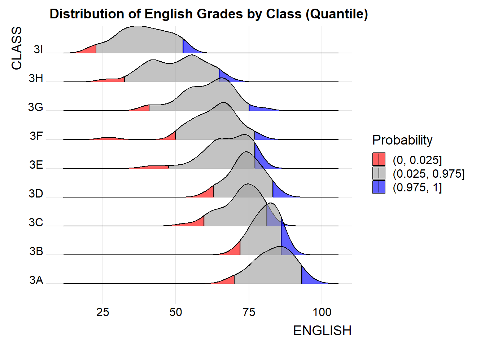
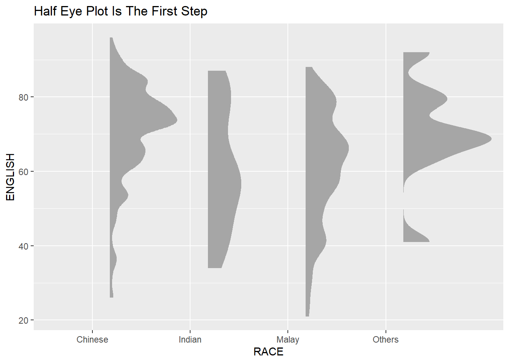
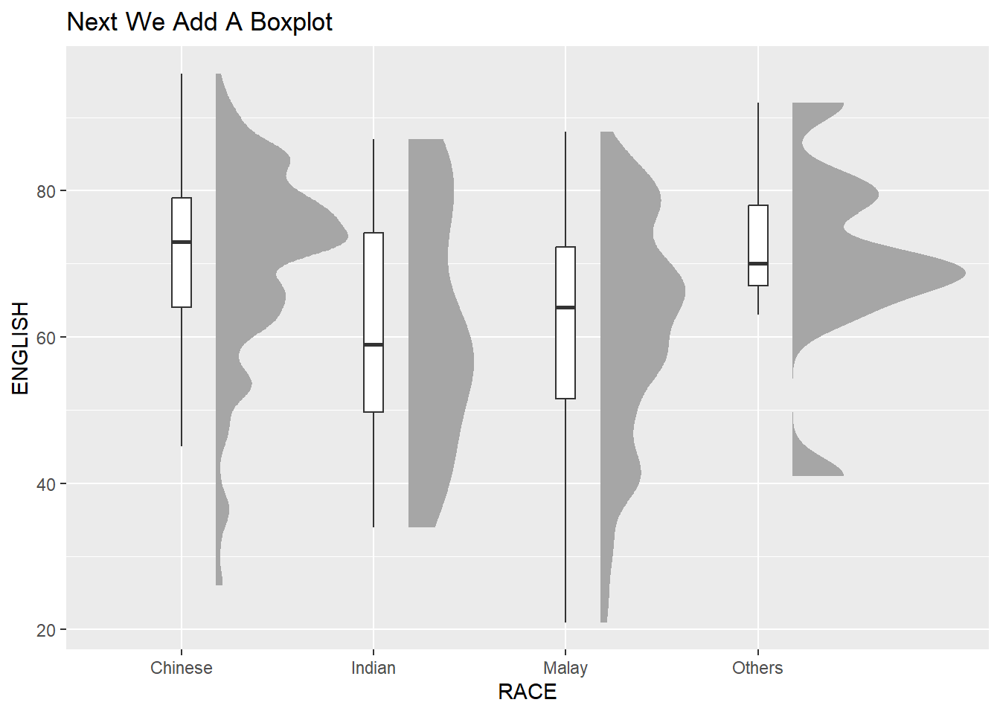
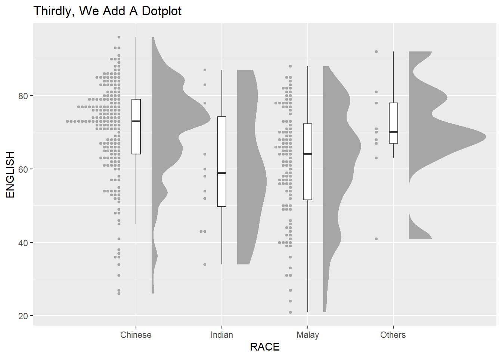
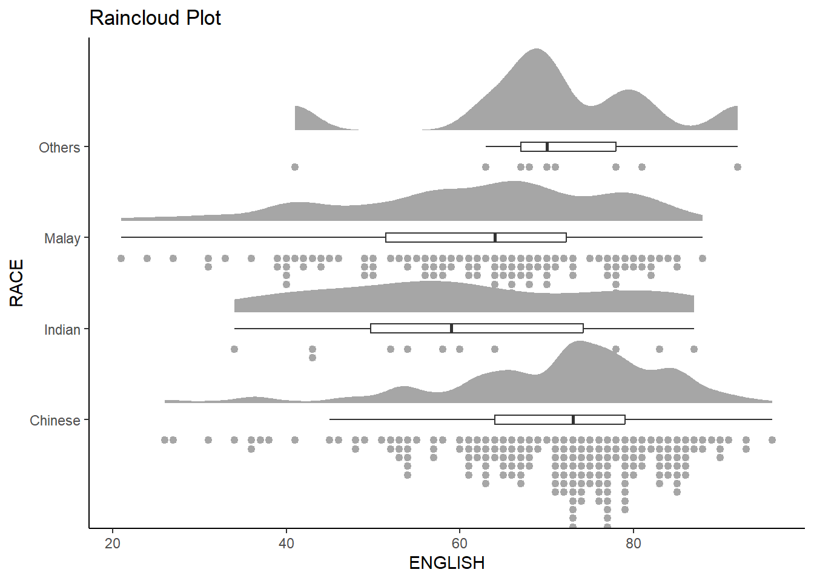

pacman::p_load(tidyverse, ggthemes,
ggdist, ggridges, colorspace, plotly)Hands-on Exercise 04 - Visualising Distributions
1. Overview
In the first part of the fourth lesson, we learn to visualise distributions using ridgeline and raincloud plots by using ggplot2 and its extensions.
2. Getting Started
2.1. Installing and Loading Packages
We will use the following R packages in addition to tidyverse and ggthemes for this exercise:
ggdist:ggplot2extension designed for visualising distributions and uncertaintyggridges: to create partially overlapping line plots to visualise changes in distribution over time or spacecolorspace: toolbox for manipulating colours and palettes
The packages to be used can be installed and loaded into the R environment using the p_load() function from the pacman package:
2.2. Import Data
Next, we will read the data provided by the Course Instructor into the R environment. We will use the read_csv() function from the readr package found in tidyverse.
exam_data <- read_csv("data/Exam_data.csv")
glimpse(exam_data)Rows: 322
Columns: 7
$ ID <chr> "Student321", "Student305", "Student289", "Student227", "Stude…
$ CLASS <chr> "3I", "3I", "3H", "3F", "3I", "3I", "3I", "3I", "3I", "3H", "3…
$ GENDER <chr> "Male", "Female", "Male", "Male", "Male", "Female", "Male", "M…
$ RACE <chr> "Malay", "Malay", "Chinese", "Chinese", "Malay", "Malay", "Chi…
$ ENGLISH <dbl> 21, 24, 26, 27, 27, 31, 31, 31, 33, 34, 34, 36, 36, 36, 37, 38…
$ MATHS <dbl> 9, 22, 16, 77, 11, 16, 21, 18, 19, 49, 39, 35, 23, 36, 49, 30,…
$ SCIENCE <dbl> 15, 16, 16, 31, 25, 16, 25, 27, 15, 37, 42, 22, 32, 36, 35, 45…Using glimpse to view the data, it is observed that the data contains the examination grades of a batch of primary 3 students for the subjects English, Maths, and Science.
3. Ridgeline Plot
A ridgeline plot is a visualisation technique that reveals the distribution of a numeric value for several groups or over different time periods.
Ridgeline plots are useful when there are more than five groups to be represented on the plot. This is because space is used more efficiently in a ridgeline plot due to the overlaps. Ridgeline plots also work well when there are clear patterns in the results, such as obvious rankings across groups.
We can use the ggridges package to plot ridgeline plots. In this package, we use geom_ridgeline() (gives exact x and y values, need to define height) to draw the ridgelines and geom_density_ridges() (gives interpolated values) to draw the estimated data densities using ridgelines.
Important
When constructing a ridgeline plot, data must consist of one catoegorical and one continuous type. For example, when plotting time in months, it is safer to use months in its spelling form (Jan, Feb) instead of its numerical form (1, 2).
Codes here
ggplot(data = exam_data,
aes(x = ENGLISH,
y = CLASS)) +
geom_density_ridges(
scale = 3,
rel_min_height = 0.01,
bandwidth = 3.4,
fill = lighten('#7097BB', 0.3),
color = "white"
) +
scale_x_continuous(
name = "English Grades",
expand = c(0,0)) +
scale_y_discrete(name = NULL,
expand = expansion(add = c(0.2, 2.6))) +
theme_ridges() +
ggtitle("Distribution of English Grades by Class")
Important
As geom_density_ridges() uses interpolated values, it is best not to represent this plot in an interactive manner as it may confuse the user.
We can observe that the distribution of English scores for classes 3A, 3B, 3C and 3D generally resemble a normal distribution. It is observed that the distribution of 3A is wider than that of 3B (bigger variability); this means that generally the students of 3B generally do almost equally well in English.
We can use the geom_ridgeline_gradient() or the geom_density_ridges_gradient() functions that allow for varying fill colours.
Codes here
ggplot(data = exam_data,
aes(x = ENGLISH,
y = CLASS,
fill = stat(x))) +
geom_density_ridges_gradient(
scale = 3,
rel_min_height = 0.01) +
scale_fill_viridis_c(name = "Grades",
option = "C") +
scale_x_continuous(
name = "English Grades",
expand = c(0,0)) +
scale_y_discrete(name = NULL,
expand = expansion(add = c(0.2, 2.6))) +
theme_ridges() +
ggtitle("Distribution of English Grades by Class (Varying Fill)")
We can use the stat_density_ridges() function to map probabilities onto the ridgeline plot. In the example below, we use stat(ecdf) to map the empirical cumulative density function for the distribution of English grades.
Codes here
ggplot(data = exam_data,
aes(x = ENGLISH,
y = CLASS,
fill = 0.5 - abs(0.5-stat(ecdf)))) +
stat_density_ridges(geom = "density_ridges_gradient",
calc_ecdf = TRUE) +
scale_fill_viridis_c(name = "Tail Probability",
direction = -1) +
theme_ridges() +
ggtitle("Distribution of English Grades by Class (Probability)")
Once again, comparing classes 3A and 3B, we can tell that the top 50 percentile of 3A students perform better than the top 50 percentile of 3B students. In addition, the top 90 percentile of 3A students perform better than the top 90 percentile of 3B students. However, the lower 20 to 25 percentile of 3A and 3B students perform similarly in English.
We can fill a ridgeline plot by quantile using geom_density_ridges_gradient() and the calculated stat(quantile):
Codes here
ggplot(exam_data,
aes(x = ENGLISH,
y = CLASS,
fill = factor(stat(quantile)))) +
stat_density_ridges(geom = "density_ridges_gradient",
calc_ecdf = TRUE,
quantiles = 4,
quantile_lines = TRUE) +
scale_fill_viridis_d(name = "Quartiles") +
theme_ridges() +
ggtitle("Distribution of English Grades by Class (Quantile)")
Instead of using a defined number of quantiles, we can specify the quantiles using cut points. In this example, we specify the quantile cut points to be 2.5% and 07.5% tails:
Codes here
ggplot(exam_data,
aes(x = ENGLISH,
y = CLASS,
fill = factor(stat(quantile)))) +
stat_density_ridges(geom = "density_ridges_gradient",
calc_ecdf = TRUE,
quantiles = c(0.025, 0.975),
quantile_lines = TRUE) +
scale_fill_manual(name = "Probability",
values = c("#FF0000A0", "#A0A0A0A0", "#0000FFA0"),
labels = c("(0, 0.025]", "(0.025, 0.975]", "(0.975, 1]")) +
theme_ridges() +
ggtitle("Distribution of English Grades by Class (Quantile)")
4. Raincloud Plot
Raincloud Plot is a data visualisation technique that combines a half-density plot and a half-dotplot. The half-density plot forms the “raincloud” while the half-dotplot forms the “raindrops”. This visualisation technique highlights where densities are clustered, thus enhancing the traditional boxplot.
4.1. Plotting a Half Eye Graph
The first step to creating a raincloud plot is to create a half eye plot, which is half of a violin plot. This can be done using the stat_halfeye() function from the ggdist package. In this example, we plot English grades against Race.
ggplot(data = exam_data,
aes(x = RACE,
y = ENGLISH)) +
stat_halfeye(adjust = 0.5,
justification = -0.2,
.width = 0,
point_color = NA) +
ggtitle("Half Eye Plot Is The First Step")
4.2. Adding a Boxplot
Next, we add a boxplot to the half eye plot using geom_boxplot().
ggplot(data = exam_data,
aes(x = RACE,
y = ENGLISH)) +
stat_halfeye(adjust = 0.5,
justification = -0.2,
.width = 0,
point_color = NA) +
geom_boxplot(width = 0.1,
outlier.shape = NA) +
ggtitle("Next We Add A Boxplot")
4.3. Adding a Half-Dotplot
The third step requires use to add in the “raindrops” in the form of a dotplot. This can be done using the stat_dots() function of the ggdist package. This creates a half-dotplot:
ggplot(data = exam_data,
aes(x = RACE,
y = ENGLISH)) +
stat_halfeye(adjust = 0.5,
justification = -0.2,
.width = 0,
point_color = NA) +
geom_boxplot(width = 0.1,
outlier.shape = NA) +
stat_dots(side = "left",
justification = 1.2,
binwidth = 0.5,
dotsize = 2) +
ggtitle("Thirdly, We Add A Dotplot")
4.4. Let It Rain (Insights)
Lastly, we use the coord_flip() function to rotate the chart to complete the raincloud appearance.
ggplot(data = exam_data,
aes(x = RACE,
y = ENGLISH)) +
stat_halfeye(adjust = 0.5,
justification = -0.2,
.width = 0,
point_color = NA) +
geom_boxplot(width = 0.1,
outlier.shape = NA) +
stat_dots(side = "left",
justification = 1.2,
binwidth = 0.5,
dotsize = 2) +
coord_flip() +
theme_classic() +
ggtitle("Raincloud Plot")